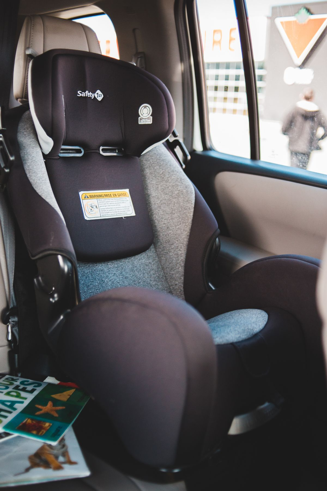
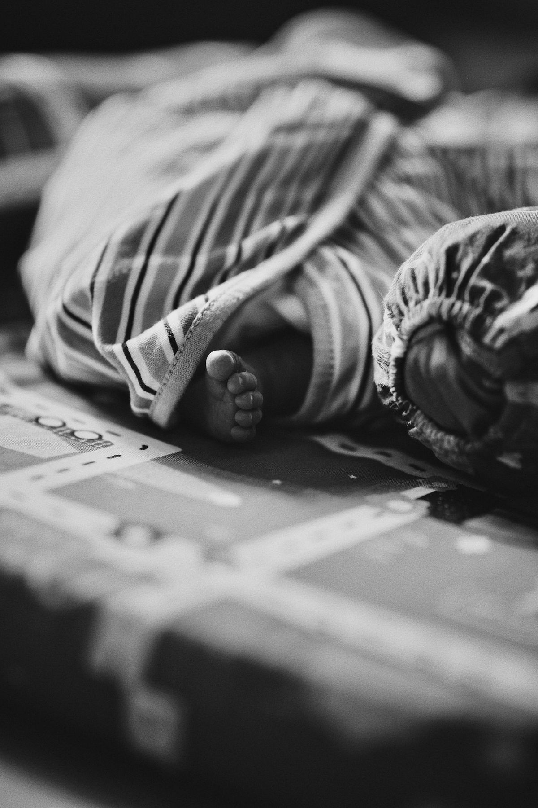
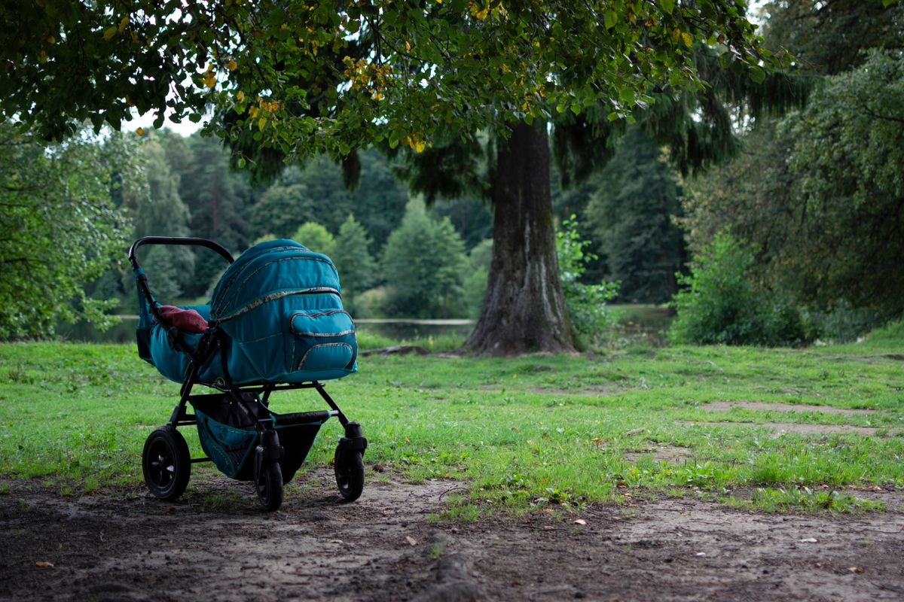
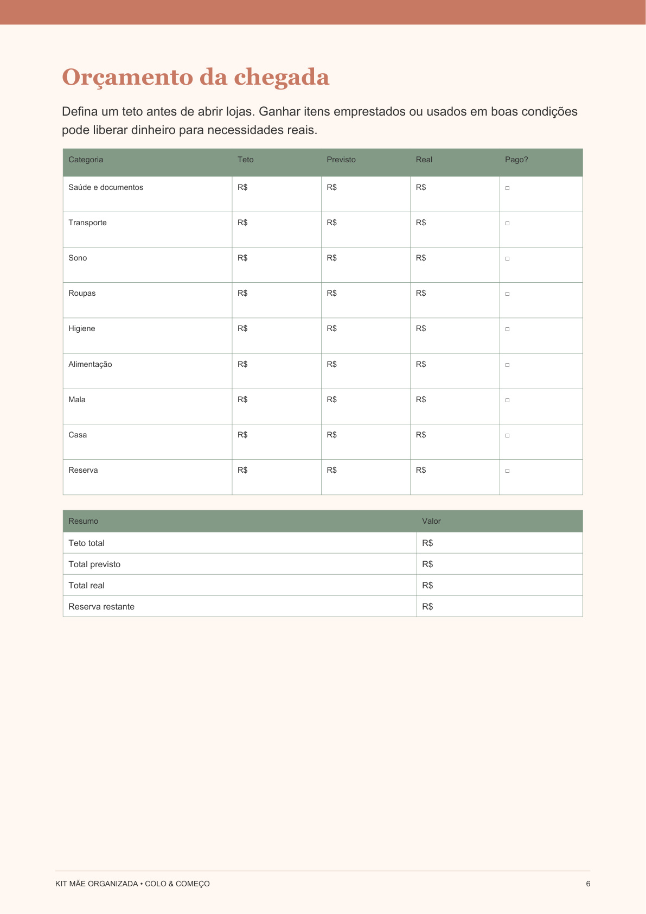

<!DOCTYPE html>
<html lang="pt-BR">
<head>
<meta charset="UTF-8">
<meta name="viewport" content="width=device-width, initial-scale=1.0">
<meta name="theme-color" content="#c94f7c">
<title>Mamãe de Primeira Viagem</title>
<meta name="description" content="Guias práticos sobre gravidez, maternidade, enxoval e cuidados com o bebê, com linguagem simples e fontes confiáveis.">
<meta name="robots" content="index, follow, max-image-preview:large">
<meta name="google-site-verification" content="c2vEN7dlCAYa0D8hj1NTnhiCdC7OQwZxxSIDKAuZ0g8" />
<meta name="p:domain_verify" content="bb42ac74870d2148e7da8ef9c57d9318"/>
<link rel="canonical" href="https://mamaeprimeiraviagem.github.io/">
<link rel="manifest" href="manifest.webmanifest">
<meta property="og:locale" content="pt_BR">
<meta property="og:type" content="website">
<meta property="og:site_name" content="Mamãe de Primeira Viagem">
<meta property="og:title" content="Mamãe de Primeira Viagem">
<meta property="og:description" content="Guias práticos sobre gravidez, maternidade, enxoval e cuidados com o bebê, com linguagem simples e fontes confiáveis.">
<meta property="og:url" content="https://mamaeprimeiraviagem.github.io/">
<meta property="og:image" content="https://mamaeprimeiraviagem.github.io/assets/img/logo-mamae-premium.png">
<meta property="og:image:alt" content="Mamãe de Primeira Viagem">
<meta name="twitter:card" content="summary_large_image">
<meta name="twitter:title" content="Mamãe de Primeira Viagem">
<meta name="twitter:description" content="Guias práticos sobre gravidez, maternidade, enxoval e cuidados com o bebê, com linguagem simples e fontes confiáveis.">
<meta name="twitter:image" content="https://mamaeprimeiraviagem.github.io/assets/img/logo-mamae-premium.png">
<script type="application/ld+json">{"@context": "https://schema.org", "@graph": [{"@type": "WebSite", "name": "Mamãe de Primeira Viagem", "url": "https://mamaeprimeiraviagem.github.io/", "inLanguage": "pt-BR"}, {"@type": "Organization", "name": "Mamãe de Primeira Viagem", "url": "https://mamaeprimeiraviagem.github.io/", "logo": "https://mamaeprimeiraviagem.github.io/assets/img/logo-mamae-premium.png"}]}</script>
<link rel="icon" href="data:image/svg+xml,<svg xmlns='http://www.w3.org/2000/svg' viewBox='0 0 100 100'><text y='.9em' font-size='90'>%F0%9F%91%B6</text></svg>">
<link rel="stylesheet" href="style.css">
<script async src="https://www.googletagmanager.com/gtag/js?id=G-92HLGPSF5Q"></script>
<script>
  window.dataLayer = window.dataLayer || [];
  function gtag(){dataLayer.push(arguments);}
  gtag('js', new Date());
  gtag('config', 'G-92HLGPSF5Q');

  // Registra toda saída para o checkout do Curso Mãe Organizada.
  // O listener delegado também cobre botões inseridos dinamicamente pelo agente de vendas.
  document.addEventListener('click', function(event) {
    const link = event.target.closest('a[href*="go.hotmart.com"]');
    if (!link) return;
    gtag('event', 'click_curso_hotmart', {
      link_url: link.href,
      link_text: (link.textContent || '').trim(),
      page_path: window.location.pathname,
      transport_type: 'beacon'
    });
  });
</script>
</head>
<body>
<header class="site-header">
  <a class="logo" href="index.html">
    
    <span>Mamãe de Primeira Viagem</span>
  </a>
  <nav>
    <a href="index.html">Início</a>
    <a href="ofertas-para-mamaes.html">Ofertas</a>
    <a href="kit-mae-organizada.html">Curso</a>
    <a href="sobre.html">Sobre</a>
    <a href="contato.html">Contato</a>
  </nav>
</header>
<main>

<h1>Maternidade sem sustos, um passo de cada vez</h1>
<p class="hero-subtitulo">Guias práticos de enxoval, mala da maternidade, sono e amamentação — tudo o que você precisa saber, explicado de um jeito simples.</p>
<div class="hero-ctas">
  <a href="kit-mae-organizada.html" class="btn-comprar">Quero o Kit Mãe Organizada</a>
  <a href="#artigos" class="btn-secundario">Ver guias gratuitos</a>
  <button id="install-app" class="btn-comprar" type="button">📲 Instale nosso aplicativo grátis</button>
</div>
<p id="install-help" class="install-help" hidden></p>
<div class="product-cta">
  <a href="checklist-enxoval-gratis.html" class="btn-secundario">Baixar Checklist Enxoval Essencial grátis (PDF)</a>
</div>
<article class="card" id="artigos">
  
  <h2><a href="artigos/enxoval-completo-bebe.html">Enxoval Completo do Bebê: Lista Item por Item (2026)</a></h2>
  <p>Lista completa e organizada do enxoval do bebê: roupas, higiene, quarto e alimentação, com quantidades recomendadas.</p>
</article>
<article class="card">
  
  <h2><a href="artigos/mala-maternidade-o-que-levar.html">Mala da Maternidade: Checklist Completo do Que Levar</a></h2>
  <p>Checklist prático da mala da maternidade para a mamãe, o bebê e o acompanhante, pronta para o parto.</p>
</article>
<article class="card">
  
  <h2><a href="artigos/guia-fraldas-recem-nascido.html">Guia de Fraldas: Tamanhos e Quantidade por Fase do Bebê</a></h2>
  <p>Quantas fraldas comprar por tamanho e por mês, e como saber quando trocar de tamanho.</p>
</article>
<article class="card">
  
  <h2><a href="artigos/como-escolher-carrinho-bebe.html">Como Escolher o Carrinho de Bebê Ideal</a></h2>
  <p>O que avaliar antes de comprar um carrinho de bebê: tipo, segurança, peso e compatibilidade com o dia a dia.</p>
</article>
<article class="card">
  
  <h2><a href="artigos/como-escolher-bebe-conforto.html">Como Escolher o Bebê Conforto Certo</a></h2>
  <p>Critérios de segurança e conforto para escolher o bebê conforto, incluindo instalação e prazo de validade.</p>
</article>
<article class="card">
  
  <h2><a href="artigos/quarto-do-bebe-decoracao-economica.html">Quarto do Bebê: Como Decorar Gastando Pouco</a></h2>
  <p>Ideias de decoração de quarto de bebê seguras e baratas, sem precisar comprar tudo novo.</p>
</article>
<article class="card">
  
  <h2><a href="artigos/amamentacao-primeiras-semanas.html">Amamentação: Guia para as Primeiras Semanas</a></h2>
  <p>O que esperar da amamentação nas primeiras semanas: pega correta, frequência e sinais de alerta.</p>
</article>
<article class="card">
  
  <h2><a href="artigos/banho-do-recem-nascido-passo-a-passo.html">Banho do Recém-Nascido: Passo a Passo e Cuidados</a></h2>
  <p>Como dar banho no recém-nascido com segurança, frequência recomendada e cuidados com o coto umbilical.</p>
</article>
<article class="card">
  
  <h2><a href="artigos/sono-do-bebe-rotina-e-seguranca.html">Sono do Bebê: Rotina e Segurança no Berço</a></h2>
  <p>Recomendações práticas de segurança do sono do bebê e como começar a criar uma rotina noturna.</p>
</article>
<article class="card">
  
  <h2><a href="artigos/fralda-de-pano-x-descartavel.html">Fralda de Pano x Descartável: Prós, Contras e Economia</a></h2>
  <p>Comparação prática entre fralda de pano e descartável: custo, praticidade e rotina do dia a dia.</p>
</article>
<article class="card">
  
  <h2><a href="artigos/como-escolher-o-berco-ideal.html">Como Escolher o Berço Ideal</a></h2>
  <p>Critérios de segurança e praticidade para escolher o berço do bebê, incluindo certificação e tipos.</p>
</article>
<article class="card">
  
  <h2><a href="artigos/primeiros-dentes-cuidados-e-itens.html">Primeiros Dentes do Bebê: Cuidados e Itens Essenciais</a></h2>
  <p>Como identificar a saída dos primeiros dentes, aliviar o desconforto e começar a higiene bucal do bebê.</p>
</article>
<article class="card">
  
  <h2><a href="artigos/bolsa-de-passeio-o-que-levar.html">Bolsa de Passeio do Bebê: O Que Levar no Dia a Dia</a></h2>
  <p>Checklist da bolsa de passeio do bebê para sair de casa com tranquilidade, do rápido ao dia inteiro fora.</p>
</article>
<article class="card">
  
  <h2><a href="artigos/recuperacao-pos-parto-o-que-preparar.html">Recuperação Pós-Parto: O Que Preparar em Casa</a></h2>
  <p>O que deixar organizado em casa antes do parto para facilitar a recuperação física da mãe no puerpério.</p>
</article>
<article class="card">
  
  <h2><a href="artigos/como-escolher-o-pediatra-do-bebe.html">Como Escolher o Pediatra do Bebê</a></h2>
  <p>O que avaliar na escolha do pediatra: convênio, disponibilidade, primeira consulta e sinais de bom atendimento.</p>
</article>
<article class="card">
  
  <h2><a href="artigos/como-escolher-a-baba-eletronica.html">Como Escolher a Babá Eletrônica Ideal</a></h2>
  <p>Tipos de babá eletrônica (áudio, vídeo, com sensor de movimento) e o que avaliar antes de comprar.</p>
</article>
<article class="card">
  
  <h2><a href="artigos/cadeira-de-alimentacao-como-escolher.html">Cadeira de Alimentação: Como Escolher</a></h2>
  <p>Critérios para escolher a cadeira de papinha do bebê: segurança, praticidade de limpeza e espaço.</p>
</article>
<article class="card">
  
  <h2><a href="artigos/kit-farmacia-do-bebe.html">Kit Farmácia do Bebê: Itens Essenciais</a></h2>
  <p>O que ter em casa para os primeiros cuidados e pequenos imprevistos com o bebê.</p>
</article>
<article class="card">
  
  <h2><a href="artigos/introducao-alimentar-guia-e-utensilios.html">Introdução Alimentar: Guia e Utensílios Necessários</a></h2>
  <p>O que preparar para começar a introdução alimentar do bebê: utensílios e itens práticos.</p>
</article>
<article class="card">
  
  <h2><a href="artigos/chupeta-como-escolher-e-desmame.html">Chupeta: Como Escolher e Quando Desmamar</a></h2>
  <p>Critérios para escolher a chupeta do bebê e como funciona o processo de desmame.</p>
</article>
<article class="card">
  
  <h2><a href="artigos/andador-e-cercadinho-vale-a-pena.html">Andador e Cercadinho: Vale a Pena?</a></h2>
  <p>Prós, contras e recomendações de segurança sobre andador de bebê e cercadinho.</p>
</article>
<article class="card">
  
  <h2><a href="artigos/guia-de-roupas-por-estacao.html">Guia de Roupas do Bebê por Estação: Verão e Inverno</a></h2>
  <p>Como montar o enxoval de roupas do bebê considerando a estação do ano em que ele nasce.</p>
</article>
<article class="card">
  
  <h2><a href="artigos/viajar-de-aviao-com-bebe-checklist.html">Viajar de Avião com Bebê: Checklist Completo</a></h2>
  <p>O que levar e como se preparar para a primeira viagem de avião com o bebê.</p>
</article>
<article class="card">
  
  <h2><a href="artigos/organizar-comoda-do-bebe.html">Como Organizar a Cômoda do Bebê de um Jeito Prático</a></h2>
  <p>Aprenda a separar roupas, fraldas e acessórios na cômoda do bebê para facilitar as trocas e acompanhar cada tamanho.</p>
</article>
<article class="card">
  
  <h2><a href="artigos/lavar-e-guardar-roupas-do-bebe.html">Como Lavar e Guardar as Roupas do Bebê Antes do Nascimento</a></h2>
  <p>Passo a passo simples para lavar, secar e guardar as roupas do bebê antes do primeiro uso, sem exagerar nos produtos.</p>
</article>
<article class="card">
  
  <h2><a href="artigos/cha-de-bebe-lista-de-presentes.html">Chá de Bebê: Lista de Presentes Úteis sem Desperdício</a></h2>
  <p>Monte uma lista de chá de bebê equilibrada, com tamanhos variados e itens que realmente serão usados na rotina.</p>
</article>
<article class="card">
  
  <h2><a href="artigos/planejamento-financeiro-chegada-do-bebe.html">Planejamento Financeiro para a Chegada do Bebê</a></h2>
  <p>Organize os gastos da chegada do bebê em despesas únicas, mensais e futuras usando um orçamento familiar simples.</p>
</article>
<article class="card">
  
  <h2><a href="artigos/cantinho-de-troca-do-bebe.html">Cantinho de Troca do Bebê: Como Montar com Segurança</a></h2>
  <p>Veja o que deixar no cantinho de trocaׯtÚÚ$z{-®éÜj×�Æ&VÃÒ$fV6†"FVæF–ÖVçFò#ì9sÂö'WGFöãàĞ¢Âö†VFW#àĞ¢ÆF—b6Æ73Ò'6ÆW2ÖvVçBÖÖW76vW2"&–ÖÆ—fSÒ'öÆ—FR#ãÂöF—càĞ¢ÆF—b6Æ73Ò'6ÆW2ÖvVçBÖ÷F–öç2#ãÂöF—càĞ¢Ç6Æ73Ò'6ÆW2ÖvVçBÖF—66Æ÷7W&R#äÆwVç2Æ–æ·2<:6òf–Æ–F÷2RöFVÒvW&"6öÖ—7<:6òÂ6VÒ7W7FòW‡G&&fö<:¢ãÂ÷àĞ¢ÂöF—càĞ£Â÷6V7F–öãàĞ£Æfö÷FW"6Æ73Ò'6—FRÖfö÷FW"#àĞ¢Çâf6÷“²##bÖÜ:6RFR&–ÖV—&f–vVÒâ6öçF\;¦Fò–æf÷&ÖF—fò(	Bì:6ò7V'7F—GV’÷&–VçF:|:6òÜ:–F–6ãÂ÷àĞ¢Çä6öÖò76ö6–FòÖ¦öâÂW7FR6—FRöFR&V6V&W"6öÖ—7<;VW2÷"6ö×&2VÆ–f–6F2ãÂ÷àĞ¢Ç6Æ73Ò'6ö6–ÂÖÆ–æ·2#àТƇ&VcÒ&‡GG3¢ò÷wwrç–÷WGV&Ræ6öÒôÖÖW&–ÖV—&f–vVÖ&Æör"F&vWCÒ%ö&Ææ²"&VÃÒ&æö÷VæW"#å–÷UGV&SÂöâ+pТƇ&VcÒ&‡GG3¢ò÷wwrçF–·Fö²æ6öÒôÖÖRç&–ÖV—&çf–B"F&vWCÒ%ö&Ææ²"&VÃÒ&æö÷VæW"#åF–µFö³Âöâ+pТƇ&VcÒ&‡GG3¢ò÷wwræ–ç7Fw&Òæ6öÒöÖÖVFW&–ÖV—&f–vVÒæ&Æörò"F&vWCÒ%ö&Ææ²"&VÃÒ&æö÷VæW"#ä–ç7Fw&ÓÂöâ+pТƇ&VcÒ&‡GG3¢òö'"ç–çFW&W7Bæ6öÒ÷–âóssCCƒ3“c#CSssrò"F&vWCÒ%ö&Ææ²"&VÃÒ&æö÷VæW"#å–çFW&W7CÂöàĞ¢Â÷àĞ¢ÇãƇ&VcÒ"ââ÷&—f6–FFRæ‡FÖÂ#åöÌ:×F–6FR&—f6–FFSÂöãÂ÷àĞ£Âöfö÷FW#àĞ£Ç67&—CàЦ–b‚w6W'f–6Uv÷&¶W"r–âæf–vF÷"’æf–vF÷"ç6W'f–6Uv÷&¶W"ç&Vv—7FW"‚rââ÷7ræ§2r“°Ğ¦ÆWB–ç7FÆÅ&ö×C°Ğ§v–æF÷ræFDWfVçDÆ—7FVæW"‚v&Vf÷&V–ç7FÆÇ&ö×BrÂWfVçBÓâ·°Ğ¢WfVçBç&WfVçDFVfVÇB‚“°Ğ¢–ç7FÆÅ&ö×BÒWfVçC°Ğ§×Ò“°Ğ¦Fö7VÖVçBævWDVÆVÖVçD'”–B‚v–ç7FÆÂÖr“òæFDWfVçDÆ—7FVæW"‚v6Æ–6²rÂ7–æ2‚’Óâ·°Ğ¢6öç7B†VÇÒFö7VÖVçBævWDVÆVÖVçD'”–B‚v–ç7FÆÂÖ†VÇr“°Ğ¢–b†–ç7FÆÅ&ö×B’·°Ğ¢–ç7FÆÅ&ö×Bç&ö×B‚“°Ğ¢v—B–ç7FÆÅ&ö×BçW6W$6†ö–6S°Ğ¢–ç7FÆÅ&ö×BÒçVÆðТ×ÒVÇ6R·°Ğ¢†VÇçFW‡D6öçFVçBÒö—†öæWÆ—GÆ—öBö’çFW7B†æf–vF÷"çW6W$vVçB�Ğ¢òtæò6f&’ÂF÷VRVÒ6ö×'F–Ɔ"RFWö—2VÒF–6–öæ":FVÆFR–ì:Ö6–òâpĞ¢¢t'&òÖVçRFòæfVvF÷"RW66öƆ–ç7FÆ"Æ–6F—fò÷RF–6–öæ":FVÆ–æ–6–Ââs°Ğ¢†VÇ憖FFVâÒfÇ6S°Ğ¢×ĞЧ×Ò“°Ğ¦–b‡v–æF÷ræÖF6„ÖVF–‚r†F—7Æ’ÖÖöFS¢7FæFÆöæR’r’æÖF6†W2’Fö7VÖVçBævWDVÆVÖVçD'”–B‚v–ç7FÆÂÖr“òç&VÖ÷fR‚“°Ğ£Â÷67&—CàĞ£Ç67&—B7&3Ò"ââ÷6ÆW2ÖvVçBæ§2"FVfW#ãÂ÷67&—CàĞ£Âö&öG“àĞ£Âö‡FÖÃàĞ